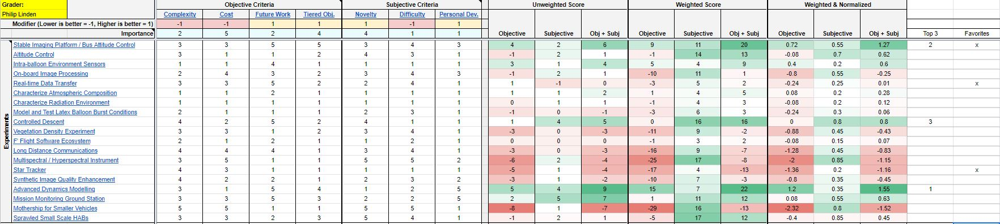
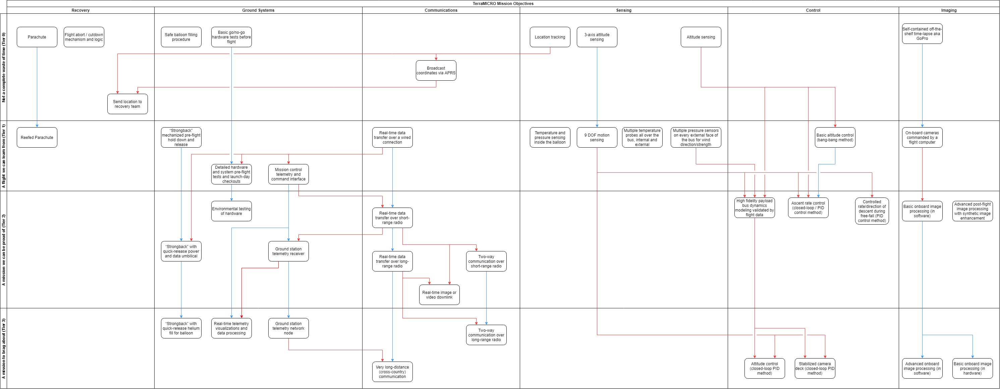

Concept Selection
Concepts shown or adapted from this list may be included in the flight design of Nucleus. Which concepts make it in depends on the combined design effort required by their individual complexity, difficulty, expected cost, team expertise in related fields, novelty, and interest from the design team.
Note
Since Nucleus is a demonstrator for a flight platform, there is no limit to the complexity, cost, or difficulty of the experiments it supports. A concept is considered feasible, then, if Brickworks contributors decide that it is sufficiently interesting, novel, or within their pe1rsonal budgets for complexity, cost, and difficulty.
Concepts vs. Requirements
Concepts are ideas. Ideas lead to objectives, and requirements are derived to meet those objectives. It is important to remember that we use concepts like those listed in this section in order to organize the possible mission objectives and technology demonstrations, and later as guiding principles for deciding actual mission objectives and formulating design requirements from there.
Selection Criteria
Note
Members of the Brickworks team were polled on what aspects of a HAB project motivate them and provide a fulfilling outlet for engineering skills. Mission concepts should be crafted to meet these criteria because engineers who take pride and genuine interest in a project do good work and stick with it until the end.
By building a high altitude balloon, I want to...
- Improve my breadboarding and electrical engineering skills.
- Learn how to design a PCB.
- Finish a project, for once.
- Set an example for RIT Space Exploration projects.
- Work with my friends on an engineering project.
- Learn how to program an FPGA for real time image processing.
- Launch a HAB for the first time.
- Develop a novel design for a difficult problem.
- Publish elements of the design process and the results to the internet.
- Build something that can be positively shown to recruiters and future employers.
- keep my engineering skills sharp across many disciplines.
- Improve my analog engineering skills.
- Engineer cheap, COTS hardware to do the job that usually requires expensive or specialty hardware if you were to do it "in the real world."
- Design a flexible platform that can be passed on to students.
- Implement improved tracking capabilities.
- Test subsystems until fully confident in launch capabilities.
- Have a mission where everything succeeds.
- Bring positive attention to RIT, RIT Space Exploration, and SPEXcast with media and blog posts.
- Mutually feed on each other’s efforts & passions to keep momentum.
- Build the simplest concept that still satisfies my itch to do something novel and technical.
- Learn and practice proper documentation skills.
- Learn technologies I can’t use at work, without the overhead of it being safe.
Objective Criteria
Complexity
Complex systems are more prone to design errors, have more failure modes, and lead to overengineered solutions. Simple or elegent solutions are always preferred over complicated ones, when possible.
Necessary complexity should be targeted and limited in scope. See also Difficulty.
Cost
This project is self funded out of our own pockets. Naturally, a lower cost is better.
Potential for Future Work
Engineering hours have the most "bang-for-buck" value on work that can be reused in future projects, or at least contributes to technical skills of the team (see also Personal Development). Concepts that have a clear path for future work or use in a future project are preferred.
Tiered Objectives
The ability for a concept to be broken down into smaller ones is an important characteristic that can balance out Complexity. What we look for is to get the most value out of every engineering hour spent working on this project. So if a concept can be decomposed into smaller, independently useful modules, those engineering hours don't go to waste. Even better if the modules have Potential for Future Work. Objectives would be graduated by a combination of Complexity and Difficulty.
Ideally, a concept would be split into tiered objectives that also serve as progression milestones. As long as the lowest tier objective is met, the HAB will fly. Higher tier objectives are progressively more ambitious and advanced.
A tiered approach enables the best chance of success, so concepts that are more easily broken up into tiered objectives are preferred.
Note
Example of a system that is modular but not tiered: tlm module,
avionics module, sensing module, nuclear fusion module. Here, if the
super complex module fails we don't really have a payload or experiment of
any sort.
Example of a system that is modular and tiered: tlm, sensing,
avionics, single axis spinning w/o controls (maybe just gas + valves),
single axis spin control (add more complexity), 3 axis controls,
propulsive landing. Where maybe that first leap into spinning is a
checkpoint, and if we do that we hit our minimum objective. Lets say we
hit the next one, single axis control, but when striving for
3-axis control we stall. That's okay, because we'd launch with the last
checkpoint we achieved and still have a successful mission.
Subjective Criteria
Novelty
Novel concepts are interesting and unique, two aspects which are desirable. It's the "cool factor."
Novelty is usually grouped with Complexity, but the two are independent--novel concepts need not be complex.
Difficulty
Difficulty is relative to one's prior training and expertise. The same problem which may be simple to an experienced engineer could be very difficult to a novice, especially if one is teaching themselves. Complicated designs are usually more difficult.
Medium difficulty is preferred, as concepts are desired to be a challenge but not so difficult as to be unreasonable to accomplish. See also Personal Development.
Personal Development
One of the goals of this project is to serve as a vector for personal learning and development in technical skills, and professional development with a technical project. It is preferred if some but not all of the concepts of a design are in an area outside the team's expertise. This is coupled with Difficulty.
Concept Selection Matrix
A decision matrix is used to evaluate experiment mission concept feasibility in a systematic way. By separating objective and subjective criteria, we can judge concepts by their technological feasibility and personal interests independently. Each team member is also given the opportunity to weight the selection criteria based on personal preference. Normalizing the scores based on these weights may give a better reflection of which concept would be best to pursue.
Every contributing member of Brickworks evaluated the list of experiment concepts on their own, then the team came together to review which experiments had the highest scores and made a selection together. The final concept selection is informed by the decision matrix, but not strictly bound to it.

The master document with all decision matrices can be found here.
Selected Experiments
From the concept selection matrix and team discussion, the following experiments were selected for development:
- Advanced Dynamics Modelling
- Altitude Control
- On-board Image Processing
- Real-Time Communication
- (Stretch) Long Distance Communications
- (Stretch) Mission Monitoring Ground Station
- (Stretch) Launch Platform
Tiered Mission Objectives
In order to allow for iteration, experimentation, and stretch goals but still retain a roadmap for development, the experiments were divided into variants of increasing complexity, cost, and difficulty. The idea is to preserve a roadmap of development for planning purposes and to allow the formulation of broad design requirements, while also allowing the team to stretch for more ambitious goals in each area. There are also interdependencies between some of the experiments, especially as they get more advanced. Having "tiered" objectives lets development progress and iterate at different rates among experiments while also maintaining a sort of baseline for success.
Below is an example diagram showing potential interdependencies and tiers of mission objectives. An epic of more ideas for mission objectives can be found here.
